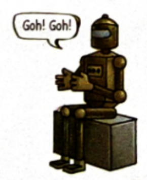
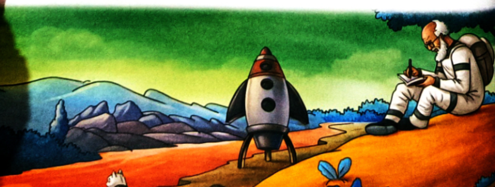
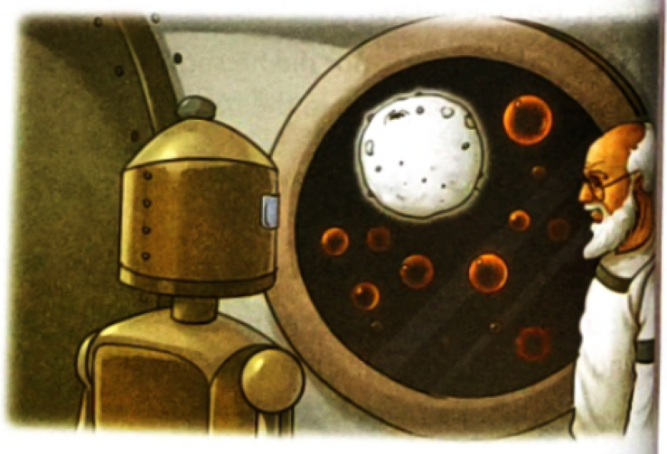

By Satyajit Ray • The Interplanetary Exploits of Professor Trilokeshwar Shonku
It was from Tarak Chatterjee that I got Professor Trilokeshwar Shonku’s diary. At once, something struck me as odd. The colour of the ink had been green the first time when I’d looked at it. Now it was red. How could that be?
I put the diary in my pocket. Obviously, I had made a mistake. My heart skipped a beat when I opened the diary at home. The ink was now blue, and before my very eyes, the ink turned to yellow.
The diary fell from my trembling hands. My dog—Bhulo—pounced upon it as soon as it hit the floor. But amazingly his teeth could do no damage to the notebook. I tried pulling a page out, and realized that the paper was impossible to tear. It was like elastic. I lit my stove and dropped the diary into the naked flames. Nothing happened. Only the colour of the ink changed.
That same night, I read the diary. This is what I read. It is for you to judge whether it is true or false, possible or impossible.
My anxieties regarding the rocket are slowly ebbing away. The closer I get to my date of departure, the more enthusiastic I feel.
Now I am beginning to think that my first attempt had failed only because of Prahlad. He had moved the arms of the clock. In a complex venture like this, every second matters. Prahlad’s mistake delayed me by nearly three and a half hours! No wonder that the rocket rose and fell again with a loud thud.
I am tired of Prahlad’s actions. He’s been with me for twenty-seven years, yet it seems his brain does not function at all. Prahlad is a fool, but it may well be useful to have him with me. Sometimes, slow and foolish people can show more courage than clever ones, as it takes them longer to reason, to feel scared.
There is no doubt that Prahlad is very brave. So I think I will take Prahlad with me. Weight should not be a problem. Prahlad weighs 62 kg. My weight is 58 kg. My robot Bidhushekhar is 90 kg, and all the other material weighs another 60 kg. My rocket can take anything upto 500 kg.
I have decided to take my cat Newton with me. He has been meowing pathetically. Perhaps he knows that the time of my departure is now quite close.
We left Earth seven days ago. Our food supply should last us five years. Newton does not have to be fed more than once a week. One fish pill is good enough for him to last seven days. For Prahlad and myself, I have taken the special pill. One tiny pill keeps hunger and thirst at bay for twenty-four hours. I have taken 200,000 pills with me.
Newton was restless during the first few days, possibly because he wasn’t used to being kept in a confined space. Since yesterday, however, he has been sitting quietly on my desk, staring out of the window. The sky looks totally black, but there are endless bright, luminous stars and planets.
Prahlad appears to feel absolutely no interest in watching the scenery outside.
I am teaching Bidhushekhar to speak. Today, I asked Bidhushekhar: "How are you feeling?"
He clapped his hands and said, "Goh! Goh!"

Undoubtedly, what he was trying to say was "Good! Good!"
Today, the planet Mars is looking as big as a grapefruit. According to my calculations, we will get there in another month. I have put to one side all that we shall have to take with us.
My camera, binoculars, weapons, first-aid box—each of these things will have to be carried. There is no doubt in my mind that there is life on Mars, though I have no idea whether that life is large or small, peaceful or violent. Surely whatever creatures there are, they won’t look anything like man.
There are five hours to landing. The blue patches on the planet—that I had initially thought were water—appear to be something different. Besides, there are slim, red, thread-like structures. I cannot imagine what they are.
We landed on Mars two hours ago. I am writing my diary sitting on a soft yellow ‘rocky’ mound. Everything here—the trees, the ground, stones and rocks—is kind of soft, and feels like rubber.
A little distance away, a red river is flowing by. It took me a while to realize that it was a river, as its ‘water’ looked like clear jelly, a bit like guava jelly. Perhaps all rivers here are red. It is these rivers that had appeared as red threads from space. What had struck me as water, it turned out, were grass and trees and plants. All of it is blue, instead of green. What is green is the sky. Everything is the opposite of what we see on Earth.

I haven’t yet seen a living creature. Did I make a mistake in my assumptions? There is no noise at all, except the slight gurgling of the river. The atmosphere is decidedly eerie. Why is everything so quiet?
It doesn’t feel cold. If anything, it is quite warm. But there is the occasional gust of wind that is very cold indeed. It lasts for only a few seconds, but seems to freeze the very marrow in my bones. Perhaps there is something in the nature of snowy mountains in the distance.
At first, I was afraid to taste the water in the river. Then, when I saw Newton drinking it, I felt bold enough to cup my hand and drink a mouthful of water myself. It tasted like ambrosia. One sip was enough to wipe out every sign of both physical and mental fatigue.
It is only Bidhushekhar who is still causing me concern. God knows what’s wrong with him. I switched him on as soon as we landed, but he did not move. "What’s the matter? Don’t you want to go out?" I asked him.
He shook his head. "Why? What’s wrong?"
This time, Bidhushekhar raised his arms over his head and uttered just one word. His voice sounded frightened. "Denghah!" he said.
I have no problem in following his words. So I could guess instantly that what he meant to say was "Danger". "What danger? What are you afraid of?" I went on.
Bidhushekhar’s tone remained grave as he answered, "Denghah. Teril denghah." (Danger. Terrible danger.)
He said nothing more, nor did he show any interest in joining us. So, in the end, we had to leave him in the rocket. Only Prahlad, Newton and I set foot on Martian soil.
We have had the most terrifying experience on Mars. I am still in complete shock. As soon as the sun rose, a strong fishy smell hit my nostrils and I heard a strange sound as if a large-sized cricket was chirping loudly: "Tintiri! Tintiri! Tintiri!"
I looked around. But, at that precise moment, a terrible scream froze my blood. Then, I saw Prahlad. His eyes were bulging, his right arm was wrapped around Newton, and he was sprinting towards the rocket.
The creature that was chasing him was not human, nor an animal or a fish. Yet, it had something in common with all three. It was about four feet high. It had legs and feet, but instead of arms there were huge fins, like fish. Its head was very big, in the centre of which was a single, large green eye. The mouth was gaping wide, but there were no teeth. Its whole body was covered by fish-scales, glistening in the Sun.
The creature could not run very fast. It kept stumbling, almost at every step. I wheeled around and saw at a distance thousands of similar creatures making their way towards us, swaying on their feet. They were all making that horrible chirping noise. Their bodies shone so brightly in the sun that it was blinding.
Bidhushekhar swung his arm and hit the creature. It gave a little squeak, flapped its fins and fell to the ground. Afraid that he might enrage the entire Martian army, I dragged Bidhushekhar into the rocket.
But, just as I was about to shut the door, I felt something cold and damp against my feet and everything went black. When I opened my eyes, the rocket was flying once more. How on earth did the rocket take off? Who started it? Where were we headed for?
We are still flying through space. I feel exhausted both mentally and physically; so do Prahlad and Newton.
Bidhushekhar wanted me to open the window. I removed the shutter and the sight that met my eyes was perfectly dazzling. There was an endless stretch of bright bubbles in the sky, forming and bursting. Countless golden spheres were expanding and enlarging, until they exploded and made a great golden spray of light, like a fountain. It is as if some king in this new spatial world is having a display of fireworks at some extraordinary royal festival.

Bidhushekhar suddenly shouted, "Tafa!" and rushed to the window. I followed him and looked out. There were no lights and no rocks—nothing except a bright white planet, clear and pure like a full moon, looking down at us. There was no doubt that our rocket was heading for it. If Bidhushekhar had to be believed, that planet was called Tafa.
Tafa is clearly visible, and now we can see millions of blinking lights on its surface, as if they are myriad fireflies, glowing in the dark. Their light is strong enough to illuminate our cabin.
We reached Tafa yesterday. A large number of people had gathered to welcome me. Their heads are large, and so are their eyes, but their arms and legs are very thin, as if they have no use for their limbs.
I think these creatures are far behind our human civilization. They were totally primitive. There are no buildings or houses in Tafa, nor are there trees and plants. The inhabitants live underground. They just disappear into holes. But they have given us a proper house to live in.
I have decided to stop writing my diary after today, as I do not see any chance of anything happening here that might be worth recording. My only regret is that there is no way of sending my diary back to Earth. It is packed with such a lot of valuable information. The fools who live here will neither understand it nor let me go back.
After I had found Professor Shonku’s diary, I made a copy of the entire diary and dropped it off at the press for printing. But when I returned home and went to my bedroom to get the original diary from the bookshelf, I saw that nearly a hundred hungry black ants had eaten the entire diary. All I could do was stare in disbelief because it had seemed completely indestructible.
On December 13, 2018, Virgin Galactic’s suborbital spaceliner, VSS Unity, made history when it soared to the edge of space, 51.4 miles (82 km) above sea level. On February 22, 2019, the aircraft repeated the feat with its first passenger—astronaut trainer Beth Moses—on board.
"It was so clear! It was crystal, crystal clear. And interestingly, you could sort of see ice crystals right out the window, and then the beautiful curvature of the Earth. It was so black in space and so clear and bright, especially with snow in the mountains. You could see the Pacific Ocean, see the southwestern United States. I felt like I was infinitely high. It was just beautiful. It was the most amazing thing."
The company received deposits from more than 600 space tourists ($250,000 each) for this once-in-a-lifetime journey. Sir Richard Branson intended to mark the 50th anniversary of the Apollo 11 moon landing with his historic flight.
| Feature | Planet Mars | Planet Tafa |
|---|---|---|
| Colour | Soft yellow ground and rocks; red rivers; blue vegetation; green sky. | Pure, clear white like a full moon; glowing with millions of blinking lights resembling fireflies. |
| Terrain | Rubbery, soft yellow rocky mounds; rivers of clear red guava-jelly water; distant snowy mountains. | No rocks, no trees, no plants, and no surface buildings. Smooth, luminescent surface. |
| People / Appearance | 4 feet tall; fish-like fins instead of arms; huge head with a single large green eye; no teeth; covered in glistening fish scales; chirping "Tintiri!". | Large heads with huge eyes, but extremely thin, frail arms and legs (as if having no functional use for physical limbs). |
| Shonku’s Observations | Decidedly eerie silence; bone-chilling wind gusts; ambrosia-like water that wiped out fatigue; hostile creatures attacking in hordes. | Peaceful, welcoming subterranean inhabitants who live in underground holes. Culturally primitive by human standards, but hospitable. |
Complete the textbook travel passage from page 55 by choosing the correct travel terminology from the interactive word bank.
Fading away gradually; lessening or weakening in intensity.
The immortal nectar/food of the Olympian gods; something supremely revitalizing and delicious.
Extreme mental or physical exhaustion resulting from prolonged labor, stress, or space travel.
Strange, mysterious, and unsettling, evoking a sense of fear and silence.
Radiating bright, glowing light, especially in deep dark outer space.
Belonging to an early stage in technical or cultural evolution; lacking modern structural architecture.
An itinerary is a structured, chronological travel plan that outlines dates, scheduled stops, transit durations, accommodation, and curated points of interest.
A model conversation between siblings Arshad and Hina demonstrating how observing surroundings, reading, and sketching make layovers engaging rather than tedious.
ARSHAD: Didn’t you get bored waiting for your flight for three whole hours?
HINA: No, not at all! It was actually fascinating sitting and watching people from every corner of the world. There is so much you can observe and do while waiting at an airport lounge!
ARSHAD: Really? What could possibly be interesting about rows of metal chairs and boarding announcements?
HINA: First, I watched the ground crew through the giant glass windows loading luggage pods and refueling the enormous Boeing 777. Then, I observed travelers in colorful traditional attire—some reading paperbacks, business executives typing on sleek laptops, and toddlers giggling with balloon toys.
ARSHAD: That does sound lively! Did you also manage to do any of your own work?
HINA: Absolutely! I completed two chapters of my science fiction novel and sketched a quick charcoal portrait of the air-traffic control tower in my travel journal. The time simply flew by!
Foreshadowing is a literary device wherein an author drops subtle clues, hints, or warnings in advance about dramatic events that will unfold later in the plot.
The shifting ink colors (green, red, blue, yellow) foreshadow that Shonku’s expedition will encounter strange spatial environments where natural laws differ wildly from Earth (like green skies and red rivers).
Bidhushekhar’s mechanical hesitation and terrified cry "Denghah! Teril denghah!" foreshadows the shocking emergence of the one-eyed Martian monsters.
The sudden eerie silence, freezing bone marrow wind, and strong pungent fish odor foreshadow that the quiet Martian landscape conceals a predatory scaled life-form.
As students grow, independent travel becomes essential for education, competitions, and life skills. Here are the expert action protocols for the real-life situations from page 58:
Do not panic. Approach a uniformed police officer, a bank security guard, or enter a reputable retail store to request a phone call to emergency family contacts.
Stay on the well-lit platform near the Station Master’s office. Inquire about the next connecting service; never wander into deserted dark alleys outside.
Politely decline unless your parents have explicitly confirmed the ride. Always prioritize planned public transit routes.
Immediately locate the airline’s customer service desk inside the terminal to rebook on the next available flight.
India has emerged as one of the elite global superpowers in space science, driven by the ingenuity and cost-effective brilliance of the Indian Space Research Organisation (ISRO):